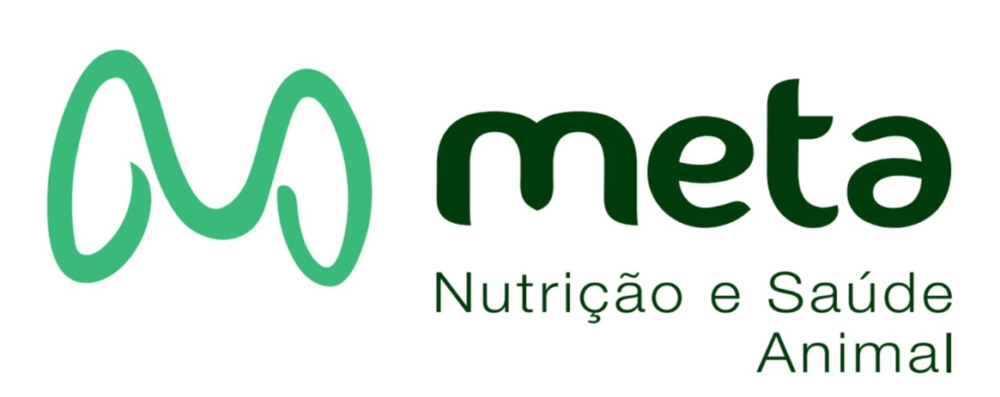

A carteira de fazendas da Meta, acompanhada de perto pela equipe técnica
Iniciando…
PAINEL DE GESTÃO · ACESSO RESTRITO

Painel de Gestão
Meta Nutrição e Saúde Animal · Acesso Restrito
Painel de GestãoADMIN
Online
Filtros
◀
PAINEL
📊Dashboard
🎯Benchmarks
🔔
Novos Cadastros
0
COMERCIAL
🗂️Pipeline de Prospectos0
📄Propostas Comerciais0
GESTÃO
🏡Propriedades
📱Uso do App do Produtor
📦Estoque de Insumos
👤Vendedores
👨🔬Técnicos
🗺️Mapa de Clientes
MONITORAMENTO
🚨Alertas Zootécnicos0
NUTRIÇÃO
🌽Dieta & Custos
🥛Controle Leiteiro
🧪Qualidade do Leite
📊Monitoramento de Consumo
🌾Forragem: Estoque & Custo
🔬Forragem: Qualidade
🐄Saúde Ruminal (ISRF)
ZOOTECNIA & REPRODUÇÃO
🐮Monitoramento da Recria
🩺Período de Transição
🧬Gestão da Reprodução
🐄Eficiência Reprodutiva
🌡️Conforto Térmico
📈Crescimento Rebanho
FINANCEIRO & ANÁLISE
💵Painel Financeiro
⚡Comparar Fazendas
💰Calculadora
🏆Ranking Índice Meta
Dashboard
Visão completa da carteira em tempo real
Ao Vivo
🔍 Abrir Propriedade
Vistas recentemente
Acesso Rápido
🕐Controle Leiteiro Atrasadofazendas ativas que fazem controle e estão há mais de 30 dias sem um novo
Carregando...
🏆Top 5 da Carteira — Melhores por Requisito
🤖Briefing Semanal com IA
Um resumo do que mudou na carteira nos últimos 7 dias: cadastros novos, laudos de forragem, alertas críticos e quedas de produção.
📈Produção da CarteiraDetalhado + tendência dos últimos 18 meses
Benchmarks Técnicos
Desempenho dos clientes ativos vs referências nacionais (Embrapa / MAPA / CNA 2024)
🏆Top 5 da Carteira — Melhores por RequisitoMédia dos 5 melhores produtores em cada indicador
Carregando...
🎯Radar — Sua Carteira vs Média das Top 5
💰IOFC — Retorno sobre Custo Alimentar, por FazendaComparável entre propriedades ativas com dieta cadastrada
💰Custo/vaca/dia — por fazendaverde ≤R$18 · laranja ≤R$25
📈RMCA/dia — por fazenda
🎯Dispersão — Custo/vaca/dia × Produção L/vacabolha = nº de vacas
🎯Dispersão — RMCA/animal/dia × Produção L/vacabolha = nº de vacas
🧭Quadrante Estratégico — Custo por Litro × Produçãobolha = nº de vacas · cor = lucro por litro (verde/vermelho)
Fazendas no canto superior-esquerdo (produção alta, custo/litro baixo) são as mais eficientes; as do canto inferior-direito precisam de atenção prioritária.
📊Distribuição — Média L/vaca/dia
🐄Distribuição — Tamanho do Rebanho
📅Distribuição — DEL Médio
📈Dispersão — Produção Média (L/vaca) × DEL (dias em lactação)cada ponto = 1 fazenda ativa
🧈Dispersão — Gordura do Leite (%) × Produção Média (L/vaca/dia)cada ponto = 1 fazenda ativa
🔬Dispersão — CCS × Produção Média (L/vaca/dia)cada ponto = 1 fazenda ativa
🤰Dispersão — Taxa de Prenhez × DEL (dias em lactação)cada ponto = 1 fazenda ativa
Central de Alertas
Oportunidades e riscos identificados automaticamente
Ranking por Índice Meta de Performance
Fazendas ativas ordenadas pela pontuação geral do rebanho (0–100)
Ao Vivo
—
AScore ≥ 80
—
BScore 60–79
—
CScore 40–59
—
DScore < 40
Qualidade do Leite
Gordura, Proteína, CCS e CBT dos clientes com dados registrados
🧈Gordura (%) — Distribuição por Faixa
🧪Proteína (%) — Distribuição por Faixa
🥇Ranking — Maior Gordura
🥇Ranking — Maior Proteína
🧬NUL — Nitrogênio Ureico do Leite por Fazenda (mg/dL)Ideal: 12–18 mg/dL
⚖️Parâmetros vs IN 77 (MAPA) — Referência Legal Brasileira
Importar Propriedades em Lote
▼ mostrar
Uma propriedade por linha, no formato produtor;propriedade;cidade;estado;situacao;vendedor;vacas;media_prod (só produtor é obrigatório; situacao = ATIVO/PROSPECTO/INATIVO).
Todas as Propriedades
Diagnóstico (só leitura)
⚠ Correção de dados (escreve no banco)
—
Produtor
Propriedade
Situação
Vendedor
Cidade
Região
Score
Vacas
L/vaca
Tend.
L/dia
Gordura
Proteína
NUL
DEL
Status
Pipeline de Prospectos
Arraste os cards entre as colunas para atualizar o estágio de negociação
Contato Inicial0
Visita Agendada0
Proposta Enviada0
Negociação0
Fechado
Solte aqui para converter em cliente ativo
Perdido
Solte aqui para marcar como perdido
Propostas Comerciais
Propostas criadas pelos vendedores — revise, sugira mudanças e implemente quando aprovado
Uso do App do Produtor
Quem tem acesso configurado e quem realmente está usando o app pra acompanhar a fazenda
📢Publicar Aviso pra Todos os Produtores
Estoque de Insumos — Carteira Inteira
Mesmo dado lançado pelos produtores e vendedores nos apps deles, em tempo real
Performance por Vendedor
Total de vacas atendidas e produção — clique no vendedor para ver o ranking de produtores
🐄Vacas em Lactação por Vendedor
💧Produção Diária (L/dia — ativos)
🐄Rebanho Médio por Vendedor
Gestão de Técnicos
Designação de Técnico Titular e Substituto para cada cliente ativo
Designação por Cliente Ativo
— clientes
Cliente
Cidade
Vendedor
Vacas
Prod/dia
Técnico Titular
Técnico Substituto
Status
Mapa de Clientes
Legenda
Ativo
Prospecto
Inativo
Tamanho = nº de vacas Clique para detalhes
Clientes no Mapa
—
Ativos
—
Prospec
—
Inativos
Nova Propriedade
Cadastro rápido — complete o resto dos dados depois, na ficha
Novo Animal
—
Peso atual — pesagem do dia do lançamento
Usada para calcular idade, peso e GMD até a desmama.
Reprodução
Nova Pesagem / Medição
—
Editar Lançamento de Consumo
—
💡 Se o MS% da dieta estiver em branco no cadastro do lote, você pode preencher aqui só pra recalcular este lançamento — isso não altera o cadastro do lote em Dieta & Custos.
—
—
—
Histórico & Gráficos
Relatório de Visita
Editar Dados
Acesso do Produtor
Estoque de Insumos
🏷️Marcos de Manejo / Decisões Técnicas
Registre aqui uma mudança técnica importante (troca de dieta, ajuste no cocho, nova silagem, protocolo reprodutivo, obra na instalação...) — ela aparece marcada nos gráficos abaixo, pra você enxergar o antes/depois de verdade.
Data
Categoria
Título curto
Descrição (opcional)
Comparativo vs Carteira (Radar)
Linha do Tempo — Todas as Ferramentas
Detalhamento das Atualizações de Rebanho
Relatório de Visita Técnica
Meta Nutrição e Saúde Animal — Preencha todos os campos durante a visita
1. Dados Gerais da Visita
2. Indicadores Produtivos do Lote
Conforto Térmico
ITU = Índice de Temperatura e Umidade. Acima de 72 já impacta produção.
Taxa de Ruminação (% vacas deitadas ruminando)
Meta: >55% do lote ruminando
3. Monitoramento do Trato e Alimentação
Avaliar consistência, partículas de fibra longa e grãos inteiros
Armadilhas, inseticidas e manejo de esterco para controle de vetores
✓
Biosseguridade da Propriedade
Quarentena de animais novos, pedilúvio ativo, controle de visitas externas
Nutrição
✓
Protocolo de Transição Nutricional
Vacas pré e pós-parto seguindo protocolo — dieta aniônica aplicada
✓
Balanço Nutricional Adequado
Formulação da dieta compatível com produção e estágio de lactação
✓
Grupo Pré-Parto Corretamente Separado
Separação 21 dias antes do parto, espaço de cocho ≥ 75 cm/vaca
Produto Meta
✓
Estoque do Produto Meta Adequado
Quantidade suficiente até a próxima visita, armazenamento correto
✓
Fornecimento Correto do Produto Meta
Dose, frequência e mistura conforme recomendação técnica
Reprodução e Gestão
✓
Programa Reprodutivo Adequado
Protocolos de IATF, confirmação de prenhez, taxa de serviço e concepção monitoradas
✓
Critérios de Descarte Definidos
Vacas com baixa produção, mastite crônica ou improdutivas identificadas
✓
Manejo de Bezerros e Novilhas
Aleitamento, colostro, desmama, vacinação e crescimento adequados
✓
Registros Produtivos Atualizados
Controle leiteiro individual, planilhas de saúde e reprodução em dia
✓
Produtor Satisfeito com Resultados Meta
Percepção positiva de produção, saúde e retorno financeiro do produto
11. Diagnóstico e Plano de Ação
12. Próxima Visita
Relatórios Anteriores desta Propriedade
Carregando relatórios...
Identificação
Alterar o vendedor transfere o cliente para a carteira do novo responsável.
Localização
Rebanho Detalhado
Produção
Qualidade do Leite
Ideal: 12–18 mg/dL
Sistema
Observações
Acesso do Produtor ao App
Gere um link exclusivo pra essa fazenda + um PIN de 4 dígitos. O produtor precisa dos DOIS pra entrar — passe direto pra ele por WhatsApp. Depois da primeira vez, o app fica logado no aparelho dele.
Carregando...
Estoque de Insumos (Concentrados)
Mesmo dado que o produtor e o vendedor veem nos apps deles — qualquer lançamento feito lá aparece aqui também, em tempo real.
Carregando...
—
—
—
Índices
Relatórios
Checklist
Calculando índices...
Incidência de Doenças Metabólicas (Total)
Histórico por Visita
Carregando...
Clique no botão acima para abrir o formulário completo de visita técnica
e preencher o checklist, scores nutricionais e diagnóstico.
Nenhum checklist registrado ainda
Importar Planilha Excel
Importe uma planilha .xlsx com os dados dos clientes. Os dados existentes no Firebase NÃO serão apagados — apenas os registros da planilha (xl_*) serão atualizados.
Clique ou arraste o arquivo aqui
.xlsx · máx 5MB
Diagnóstico Comparativo
Onde a fazenda está, onde a carteira está, e onde as melhores fazendas já chegaram
Fazenda em foco
Selecione uma fazenda pra ver o comparativo
Alertas Zootécnicos
Produtores ativos com dados desatualizados há mais de 30 dias
Ao Vivo
—
Críticos +90 dias
—
Atenção 60–90 dias
—
Aviso 30–60 dias
—
Em dia <30 dias
Dieta & Custos por Lote
Calcule o custo/vaca/dia e o RMCA (Retorno Menos Custo Alimentar) de cada lote
📊Resumo Geral — Toda a Carteira
Carregando...
Fazenda / Propriedade
—
R$ —
Custo total/dia
todos os lotes
R$ —
Custo/vaca/dia
média geral
R$ —
Retorno/dia
leite vendido
R$ —
RMCA total/dia
Retorno − Custo alimentar
Evolução da Dieta — RMCA e Custo/vaca/dia ao longo do tempo
Selecione uma fazenda para ver o histórico.
Gerar Proposta Comercial
Monta uma proposta comercial em PDF (layout Meta + Polinutri) usando a dieta calculada acima — funciona também para clientes prospectos, com equipe de atendimento, especificações do produto e condições comerciais editáveis.
Preencher com IA (print ou PDF do programa de formulação)
Envie a(s) tela(s) ou o(s) PDF(s) exportado(s) do seu programa de formulação (NRC, AMTS, RLM, planilha, etc.) — pode selecionar vários arquivos de uma vez (ex: um PDF por lote, ou várias fotos da mesma dieta). A IA identifica os lotes e os alimentos com kg/vaca/dia de cada arquivo e junta tudo abaixo pra você revisar antes de importar.
Importar Dieta (colar dados de planilha/foto)
▼ mostrar
Um lote por bloco. Comece cada lote com LOTE: Nome do Lote, depois uma linha por alimento no formato alimento;kg/vaca/dia;R$/kg. Isso substituios lotes atuais da fazenda selecionada.
Controle Leiteiro
Importe a medição individual de vacas (DEL, litros) e veja a dispersão, curva de lactação e histogramas
📊Resumo da Carteira — todas as fazendas▲
até
Carregando...
▶Ver Top 10 Vacas Mais Produtivas
▶Ver Ranking de Fazendas — Pico e Persistência
▶Comparativo de Tecnologias — o que está rendendo mais pico de leite
Fazenda / Propriedade
Data do controle
Propriedade selecionada
—
—
—
Envie o relatório do laticínio como veio — pode ser várias fotos (um boletim de mais de uma página, por exemplo), um PDFou uma planilha Excel. A IA lê as fotos/PDF, a planilha é lida direto (mais precisa), calcula o DEL quando faltar e organiza tudo junto abaixo pra você revisar antes de salvar.
É aqui que os dados lidos pela IA também aparecem pra você revisar antes de salvar. Cole direto, uma vaca por linha, no formato vaca;litros;del;lote;obs;lactação (lote, obs e lactação são opcionais).
🧪 Tecnologias Empregadas Neste Controle (—)
Marcado por controle, não pela fazenda inteira — se a fazenda começou a usar uma tecnologia num certo mês, marque só os controles a partir dali. Usado no "Comparativo de Tecnologias" pra medir o quanto cada prática está associada a um pico de lactação maior.
Salva os dados importados e as tecnologias marcadas na data do controle.
Categoria
Baseado na coluna opcional de nº de lactação/parto do relatório importado (1 = primípara, 2+ = multípara). Quando o relatório não tem essa coluna, todos os animais entram como "Todos".
🧪Qualidade do Leite — laudos do laticíniogordura, proteína, CCS, CBT, NUL▼
🧪Qualidade do Leite — Laudos do Laticínio
Cole ou importe por IA os boletins de qualidade (gordura, proteína, CCS, CBT, NUL etc.) enviados pelo laticínio. O laudo mais recente atualiza automaticamente a ficha da fazenda e os indicadores usados no resto do painel (Índice de Saúde, alertas, benchmarks, relatórios em PDF).
Envie foto(s) ou PDF do boletim de qualidade (Clínica do Leite, Stat Qualidade, etc.) — pode selecionar vários arquivos de uma vez.
Uma linha por data de coleta: Data;Gordura;Proteína;Lactose;ST;ESD;CCS;CBT;NUL (deixe em branco o que não tiver, ex: 11/03/2026;3.68;3.28;4.55;12.38;8.70;569;28;17.3)
📈Evolução da Qualidade do Leite
Monitoramento de Consumo
Consumo real de matéria seca por lote, lançado pelos tratadores em campo — % de sobra, MS ingerida/animal e tendência
📊Resumo Geral — Toda a Carteira
Carregando...
Fazenda / Propriedade
Lote
Período
Selecione uma fazenda e um lote pra ver o monitoramento
Monitoramento da Recria
Animais em recria, pesagens registradas em campo pelo vendedor e ganho médio diário (GMD)
📊Resumo Geral — Toda a Carteira
Carregando...
Fazenda / Propriedade
🤖Lançar Peso e Altura com IA
Envie foto de anotação de campo, planilha Excel/CSV ou PDF com as pesagens, ou uma lista de animais com a data de nascimento. A IA lê e organiza, você confere e salva. Brinco não cadastrado vira animal novo; sem peso ao nascer, ele recebe o peso de referência da fazenda.
Linhas extraídas (edite se precisar) — formato: Brinco;Peso(kg);Altura(cm);Data da pesagem;Nascimento. Só cadastro: Brinco;;;Nascimento
Forragem: Estoque & Custo de Produção
Custo de produção da silagem/pré-secado e quantos dias de estoque ainda restam
📊Resumo Geral — Toda a Carteira
Carregando...
Fazenda / Propriedade
Tipo
Selecione uma fazenda pra começar.
Monitoramento do Período de Transição
Pré-parto (consumo + pH urinário) e pós-parto (BHB + eventos de saúde) — do close-up até os primeiros dias de lactação
Fazenda / Propriedade
Data
🌽Consumo do Lote (Pré-Parto)
🧪pH Urinário por Animal
📊pH por Animal — Faixa Desejada 5.5–7.0
🩸BHB e Eventos de Saúde por Animal
BHB medido em mmol/L (sangue ou leite). Referência clínica padrão: ≥1.2 = cetose subclínica, ≥3.0 = cetose clínica.
📊BHB por Animal
🎯Índices de Saúde Pós-Parto
Forragem: Qualidade
Laudos bromatológicos, leitura automática por IA e potencial de produção de leite (MLK2024)
Fazenda / Propriedade
Tipo
Propriedade selecionada
—
—
—
📊Resumo Geral — Toda a Carteira
até
Carregando...
🔬Dispersões — Toda a Carteira
Matéria Seca × Teor de Amido
Só se aplica a Silagem (Amido não é relevante em Pré-secado)
Matéria Seca × Digestibilidade do FDN
Rankings — Todas as Silagens (Melhor → Pior)
MLK2024 (Potencial de Leite)
Teor de Amido
⚖️Ponto de Equilíbrio — Amido × Digestibilidade do FDN
Conforme a Matéria Seca sobe, o Amido tende a subir (grão mais maduro) e a Digestibilidade do FDN tende a cair (mais lignificação) — esse gráfico mostra as duas tendências juntas pra achar a faixa de MS que equilibra os dois. Considera só laudos de Silagem, já que Amido não se aplica a Pré-secado.
⏱️Taxas de Degradação Ruminal — Kd Amido × Kd FDN
Velocidade com que o amido e a fibra são degradados no rúmen (%/hora) — quanto maior, mais rápido o nutriente é disponibilizado para os microrganismos.
Selecione uma fazenda pra começar.
Saúde Ruminal (ISRF)
Índice de Saúde Ruminal e Fisiologia Mastigatória — cruza cocho, Matéria Seca e comportamento do rebanho num escore de 0 a 100
Fazenda / Propriedade
Data
🧪Módulo A — Formulação e Parâmetros Ruminais (AMTS / NRC 2001)
FDN total da dieta (% da MS)
Amido total (% da MS)
Amido fermentável em rúmen (% do amido)
Consumo de MS real (kg/vaca/dia, opcional)
🥣Módulo B — Avaliação de Cocho e Granulometria (Penn State)
Peneira Penn State no TMR oferecido (base Matéria Natural). Se a dieta tem coprodutos peletizados sem efetividade física (casca de soja, polpa cítrica peletizada etc.), informe quantos gramas disso ficaram retidos no >8mm — o cálculo desconta e realoca pro fundo, como recomenda a literatura.
Peso retido >8mm — Matéria Natural (g)
Peso fundo <8mm — Matéria Natural (g)
CV do cocho — 5 pontos (%)
Coproduto peletizado sem efetividade retido >8mm (g MN, opcional)
💧Módulo C — Determinação de Matéria Seca (MS)
MS da TMR total (%)
MS do fundo <8mm (%)
🐄Módulo D — Indicadores Comportamentais e Fisiológicos
% vacas ruminando (deitadas/repouso)
Score de Enchimento Ruminal (1 a 5, opcional)
% fezes escore 3
Enchimento ruminal: escore visual/palpação da fossa paralombar esquerda — 1 = bem vazia (consumo recente baixo), 3 = ideal, 5 = muito cheia. Sinaliza queda de consumo mesmo quando a dieta está formulada corretamente.
🎯Índice de Saúde Ruminal (ISR)
Preencha os módulos acima pra calcular o ISR.
📁Histórico de Peneiras — visitas do vendedor + lançamentos avulsos
Selecione uma fazenda acima pra ver o histórico de peneiras.
➕Lançar Nova Peneira
Data
Autor / Responsável
Oferecido (TMR / cocho) — peso retido em gramas, 5 pontos
Topo 19mm
Meio 8mm
Fundo
Sobras (orts) — mesma peneira, 5 pontos
Topo 19mm
Meio 8mm
Fundo
Painel Financeiro da Propriedade
Custo total, receita, lucro e ponto de equilíbrio — cruzando com a Dieta & Custos já cadastrada
📊Resumo Geral — Toda a Carteira
Carregando...
Fazenda / Propriedade
📄Lançar Notas Fiscais com IA
Envie foto ou PDF da nota fiscal. A IA lê os itens e sugere pra qual custo cada um vai (ração de bezerra → Recria, ração de lactação → Alimentação Lactação, adubo/sementes → Lavoura & Forragem, etc). Você confere e ajusta a categoria antes de somar aos custos do mês.
Itens extraídos (edite se precisar) — formato: Descrição;Valor;Categoria
Selecione uma fazenda pra começar.
Selecione uma fazenda pra começar.
Gestão da Reprodução
Rebanho vaca a vaca: inseminações, diagnósticos, partos, secagem e taxas de serviço, concepção e prenhez calculadas automaticamente
Fazenda / Propriedade
Selecione uma fazenda pra começar.
Eficiência Reprodutiva
Diagnóstico rápido de prenhez e o impacto econômico oculto do atraso reprodutivo
📊Resumo Geral — Toda a Carteira
Carregando...
Fazenda / Propriedade
Selecione uma fazenda pra começar.
Auditoria de Conforto Térmico
Ventilação, aspersão e banhos — um índice único pra comparar o preparo de cada fazenda pro calor
📊Resumo Geral — Toda a Carteira
Carregando...
Fazenda / Propriedade
Selecione uma fazenda pra começar.
Calculadora de Crescimento de Rebanho
Projeção do crescimento do rebanho para os próximos anos com base nos parâmetros produtivos e reprodutivos
Carregar dados de fazenda
Rebanho Atual
Vacas adultas em lactação / secascabeças
Novilhas 12–24 mesescabeças
Novilhas 4–12 mesescabeças
Bezerras 0–4 mesescabeças
Parâmetros Reprodutivos
Uso de sêmen sexadoafeta % fêmeas nascidas
Taxa de concepção vacas — Verão (%)out–mar, calor prejudica a fertilidade
Taxa de concepção vacas — Inverno (%)abr–set, sem estresse térmico
Taxa de serviço (%)% inseminadas no cio
Concepção novilhas (%)geralmente maior que vacas
Idade ao primeiro partomeses
Período de Espera Voluntário (dias)dias pós-parto até liberar pra inseminar
DEL médio ATUAL do rebanho (dias)se souber, deixa a estimativa mais fiel
Vacas Prenhas HOJE (contagem)puxa automático da Reprodução, se tiver \u2014 ou preencha aqui
Usado pra agendar os partos dos pr\u00F3ximos ~9 meses de forma mais precisa, em vez de depender só da m\u00E9dia estat\u00EDstica.
Ou informe por mês previsto de parto
IEP de referência (meses)calculado automaticamente abaixo
Será calculado com concepção × serviço
Perda de Prenhez Pós-DG
Absorções + abortos após DG positivo até o parto. Vacas que concebem mas não chegam a parir.
Perda de prenhez pós-DG (%)absorções + abortos até o parto
Mortalidade por Categoria
Mortalidade bezerras (%)0–4 meses
Mortalidade novilhas (%)4–24 meses
Mortalidade vacas adultas (%)por ano
Descarte & Reposição
Descarte alto melhora a média de produção mas exige mais reposição. O excedente de novilhas pode gerar renda.
Descarte involuntário (%/ano)doenças, acidentes, morte
Total de descarte: 15%/ano
▶🎯 Cenários avançados: descarte dinâmico e idade do rebanhoativo
Quando há mais novilhas disponíveis do que o necessário pra repor, o modelo aumenta o descarte (mais seletividade). É uma aproximação que você calibra — não existe uma constante "certa" pra isso.
Sensibilidadepp de descarte extra a cada 10pp de excesso de reposição
O modelo acompanha mês a mês o número médio de partos do rebanho, com uma curva de sobrevivência realista — poucas vacas de alta produção chegam ao 5º parto.
Nº médio de partos ATUALo número real desta fazenda, se você souber
Meta de partosonde você quer manter o rebanho
% que chega ao 4º partorealidade de vaca alta produção
Curva de sobrevivência calculada a partir do dado acima
Descarte voluntário médio implícito/ano
Novilhas prontas/ano pra sustentar
Fluxo de Caixa
Valor vaca de descarte (R$)preço médio de venda
Valor novilha excedente (R$)novilha gestante ou próx. ao parto
Custo de reposição (R$/novilha)compra se produção interna insuficiente
Custo de criação da novilha até o parto (R$/cab)desconta da receita de venda de excedente
Configuração da Projeção
Horizonte de projeçãoanos
Capacidade máxima de vacastrava física das instalações (cab.)
Capacidade máxima de novilhas 12–24mem branco = metade da capacidade de vacas, automático
Estratégia de reposiçãodestino das fêmeas excedentes
🥛Produção de Leite Esperadarebanho crescendo + produtividade melhorando
Produção Média AtualL/vaca/dia
Ganho esperado por semestreL/vaca/dia — genética, manejo, nutrição melhorando
Preço do leiteR$/litro — receita de leite na projeção
▶🎯Simular Melhorias Futurasative quantas quiser, cada uma com seu valor e a partir de quando
Categoria
Novo valor (%)
A partir do semestre
A linha verde no gráfico soma o efeito de todas as categorias marcadas acima, cada uma entrando em vigor no semestre que você escolher — a linha vermelha continua mostrando o cenário sem nenhuma mudança.
Rebanho projetado — ao final do período
—
Vacas adultas
—
Novilhas
—
Total rebanho
—
Novilhas vendidas
Fluxo de Caixa do Rebanho — período total
R$ —
Receita (descarte + novs, já líquida do custo de criação)
R$ —
Custo de reposição
R$ —
Custo de recria em andamento (caixa já investido, ainda não pariu)
R$ —
Saldo líquido
R$ —
Média por ano
▶🛒Compras e Vendas Manuais (por ano)
Lance aqui compras (número positivo) ou vendas (número negativo) de animais por categoria e por ano — além da venda automática do excedente que já acontece sozinha. Ex: comprou 15 novilhas em 2024 → +15. Vendeu 4 vacas em 2033 → -4.
💾Salvar Projeção
Guarda um retrato desta projeção pra fazenda selecionada, pra você acompanhar como as premissas e os resultados mudam ao longo do tempo.
📊Evolução do rebanho por categoria
📅Projeção anual detalhada
🐄Partos por mês e baias de bezerreiro
Calculadora de Ganho Potencial
Mostre ao prospecto quanto ele pode ganhar com a Meta
Dados da fazenda do prospecto
Benchmark — clientes Meta na região selecionada
—
Média Meta L/vaca
—
Clientes ativos Meta
Produção atual—
——
Ganho potencial diário
R$ —
litros extras/dia × preço do leite
R$ —
por mês
— L
litros extras/dia
Excluir fazenda?
Esta ação é permanente.
Esta ação não pode ser desfeita
O que vai no relatório?
Selecione as seções que você quer incluir no PDF
🔔
Novos Cadastros
0 não lidos
Clientes cadastrados pelos vendedores no app
Nenhum cadastro novo
Quando um vendedor criar um cliente no app, aparece aqui.
![Meta Nutrição e Saúde Animal]()